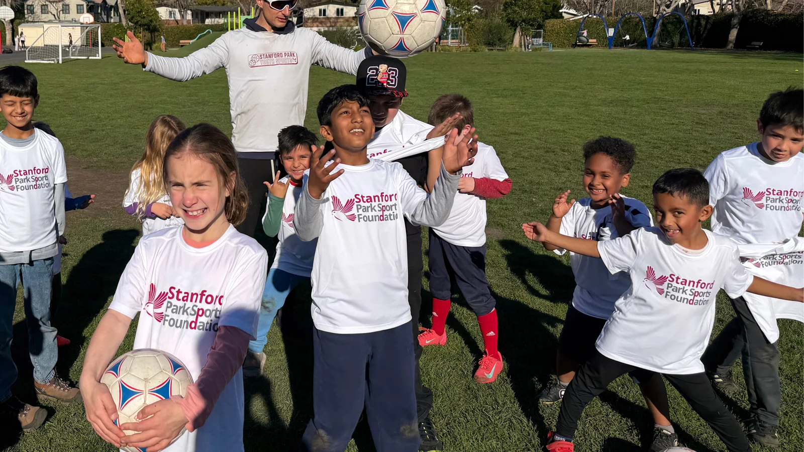
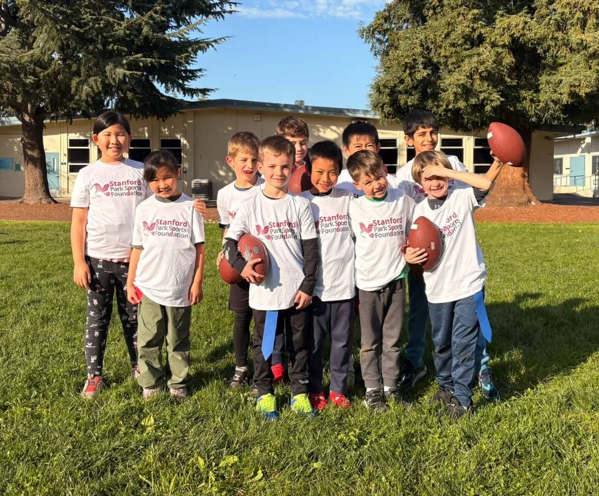
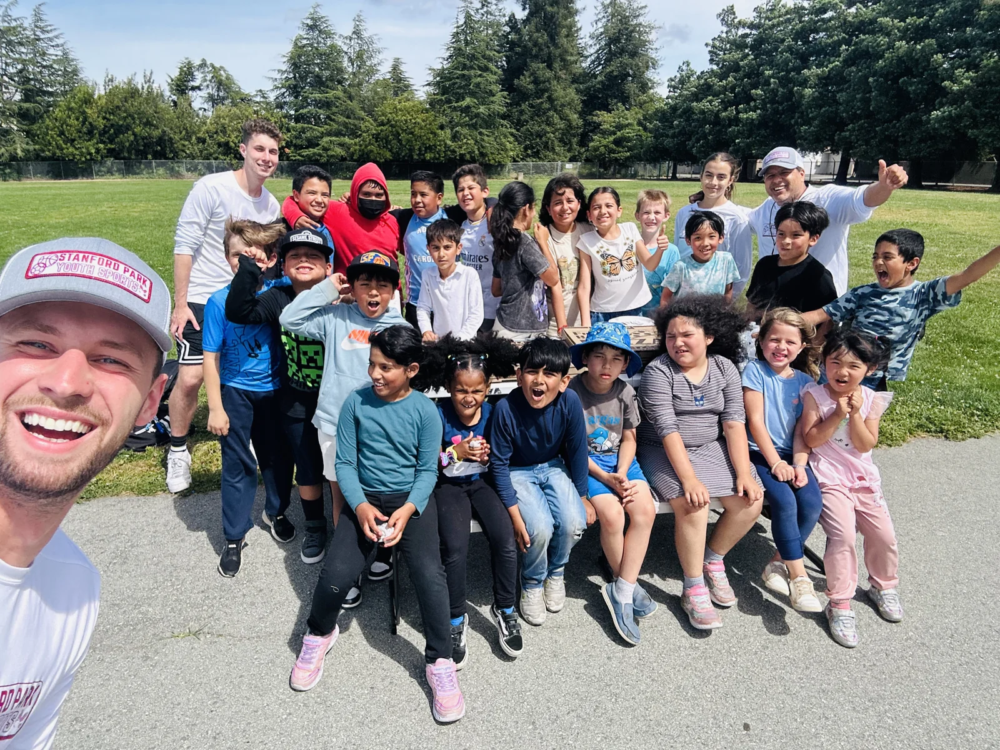
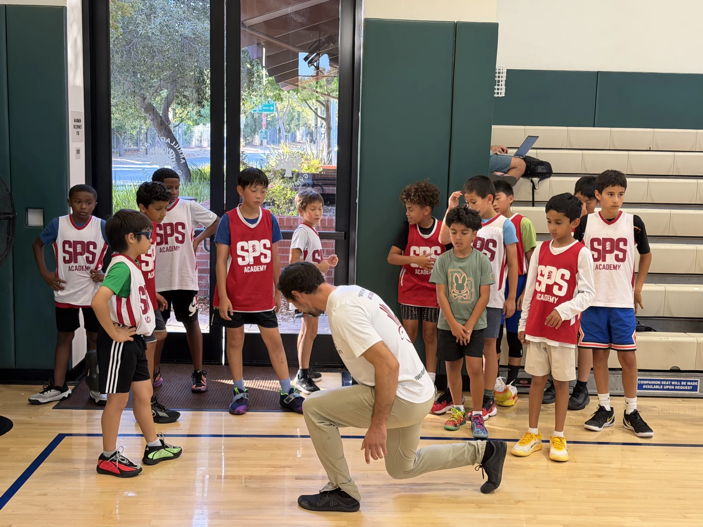
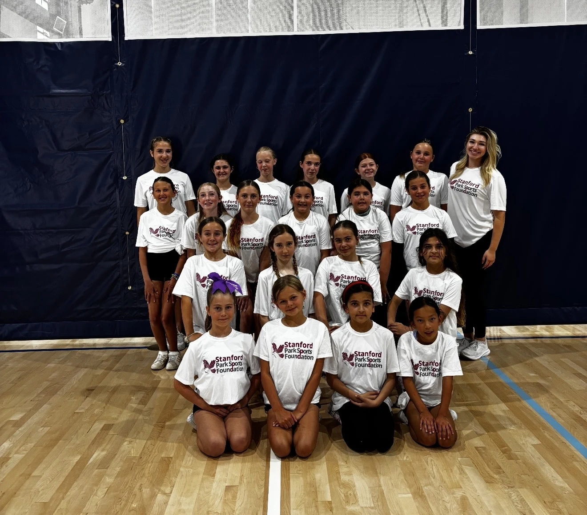
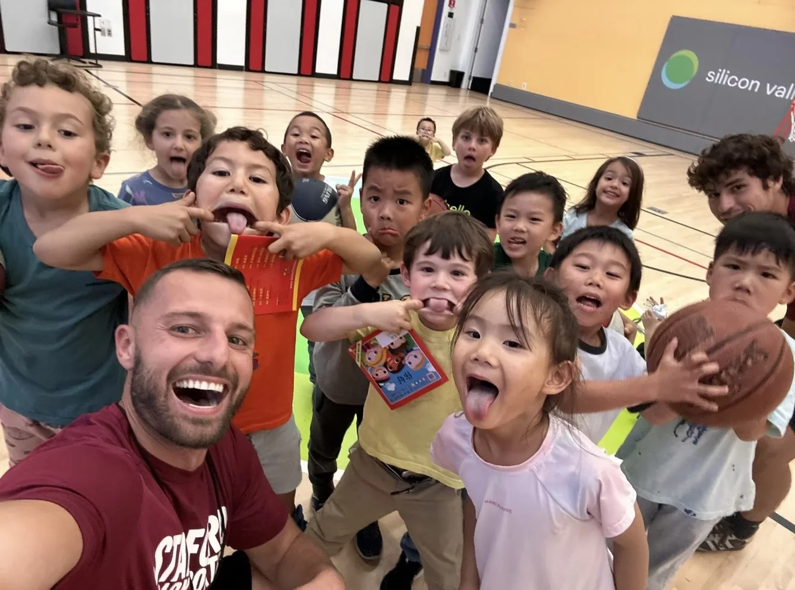
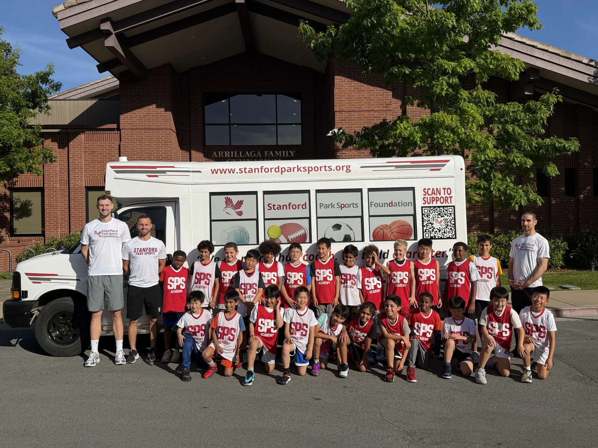
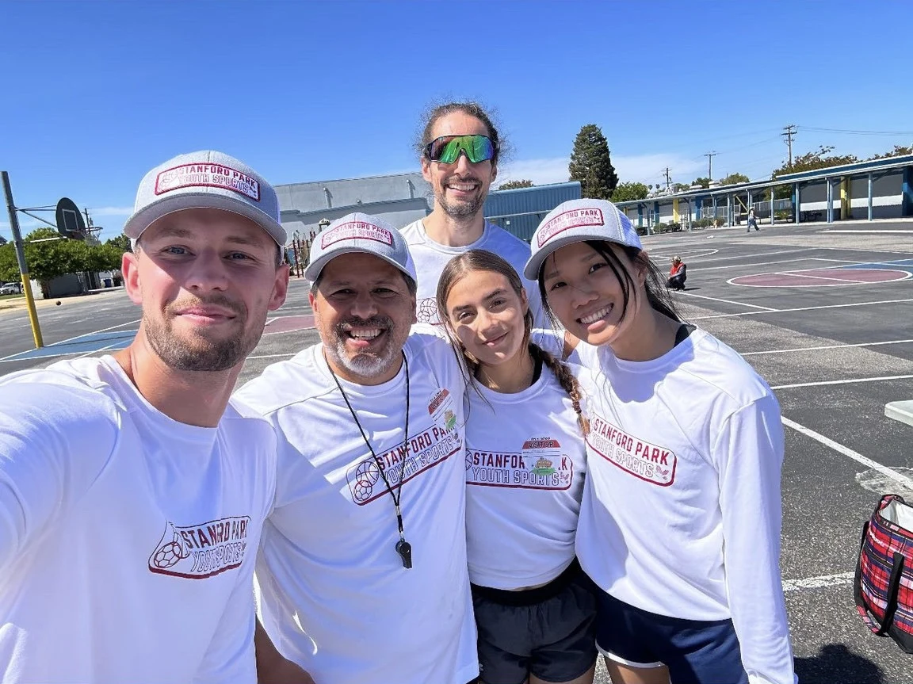

Scholarships for kids
Help children from low-income families participate in sports programs that would otherwise be out of reach.
The joy your child found in sports.
A chance to share it with another family.
Your gift helps bring coaching, connection, and confidence to children from low-income families through scholarships and free sports programs.
Give the gift of play A registered 501(c)(3) nonprofit · EIN 33-2148759

Help a child find their team. Choose a one-time gift or make a difference every month.
Your support helps provide scholarships, caring coaches, and free sports programs for more children.
Having trouble with the form? Open our donation page in a new tab.
The excitement before practice. The pride after learning something new. The friendships that last beyond the final whistle.
Whether your family joined us through a school program or SPS Academy, you’re part of the Stanford Park Sports community. You’ve seen how much a caring coach and a chance to play can mean to a child.
For some families, program fees put that experience out of reach. We want more children to have the same opportunity to move, grow, and belong—regardless of what their family can afford.
If SPS has made a difference for your child, please consider helping us share that experience with another family. A gift of any size can help us expand access to sports.
Thank you for being part of our community.
The Stanford Park Sports team
Your donation supports the people, programs, and equipment that help children get in the game.

Help children from low-income families participate in sports programs that would otherwise be out of reach.

Support caring coaches and the balls, cones, and training gear that make active, engaging sessions possible.

Help bring sports to more schools and communities where families need additional support.

To be part of a team. To try something new. To have someone cheering them on.
We’re building on the community our school and academy families already know—so more children can experience the confidence and connection that come from playing together.



Make a one-time gift or become a monthly supporter using the donation form above. Every act of generosity helps us work toward a community where more children can play.
Donate to help kids playStanford Park Sports Foundation · Registered 501(c)(3)
EIN 33-2148759 · Donations are tax-deductible.